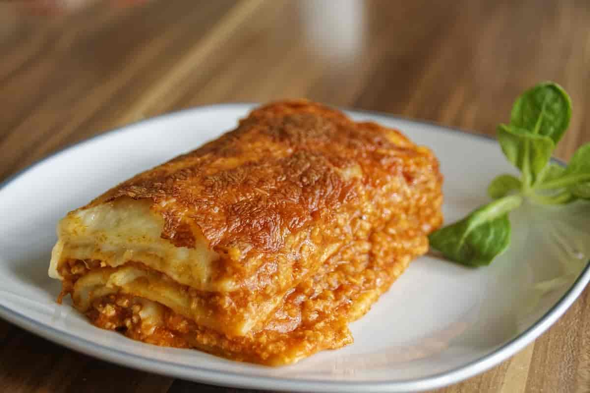

Layers of meaty sauce, ricotta cheese, parmesan, and lasagna noodles.
- 2 tsp extra virgin olive oil
- 1 lb ground beef chuck
- 1/2 medium onion, diced
- 1/2 large bell pepper, diced
- 2 cloves garlic
- 1 28oz can tomato sauce
- 3 oz tomato paste
- 1 14 oz can crushed tomatoes
- 2 Tbsp chopped fresh oregano OR
- 2 tsp dried oregano
- 1/4 cup chopped fresh parsley, packed
- 1 Tbsp Italian seasoning
- 1 pinch garlic powder AND/OR
- 1 pinch garlic salt
- 2 Tbsp red OR white wine vinegar
- 1 Tbsp to 1/4 cup sugar (to taste)
- Salt to taste
- 1/2 lb (9 pcs) dry lasagna noodles
- 15 oz ricotta cheese
- 1 1/2 lb (24 oz) mozzarella cheese, grated or sliced
- 1/4 lb (4 oz) freshly grated Parmesan cheese
- Put a large pot of salted water on the stovetop on high heat. Prepare
the sauce while the water is heating up.
- In a large skillet, heat 2 Tbsp of olive oil on medium high heat. Add
the ground beef and cook until lightly browned on all sides. Remove beef
from heat with a slotted spoon to a bowl. Retain 1 Tbsp of fat and discard the rest.
- Add the bell pepper and onions. Cook for 4 to 5 minutes, until onions are
translucent and the peppers are softened. Add the garlic and cook another half a minute.
- Return the beef to the pan and combine. Reduce heat and cook 5 minutes.
- Transfer the beef to a pot. Add the crushed tomatoes, tomato sauce, and tomato paste.
Add parsley, oregano, and italian seasoning. Sprinkle with garlic powder and/or garlic
salt.Salt to taste but note Parmesan will later add saltiness. Sprinkle with vinegar.
Add sugar 1 Tbsp at a time, to taste.
- Bring the sauce to simmer, lower heat and cook from 15 to 45 minutes stirring often
and making sure the bottom doesn't scorch. Remove from heat.
- Cook noodles to al dente.
- Drain and seperate noodles, place on rack or use a little olive oil on
parchment to prevent sticking while cooling.
- Heat oven to 375 F
- In a 9x13 baking dish, spread a cup of sauce across the bottom. Arrange one
layer of lasagna noodles lengthwise. Add 1/3 of the sauce on top of the noodles.
- Sprinkle a layer of mozzarella over the sauce. Add half of the ricotta in dollops
about an inch ore so apart.
- Add another layer of noodles and repeat the last step.
- Top with alayer of mozzarella.
- Cover the pan with aluminum foil tented so it doesn't touch lasagna and bake for
45 minutes. Uncover for last 10 minutes to crisp top.